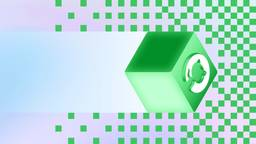

直近1週間の人気フィード
はてなブックマーク数を元に新着優先で並べ替え
Deno is joining Cloudflare 98 Deno
98 Deno
Putting ourselves in the best place to build the future of the web
1日前

Deno is joining Cloudflare 14 Cloudflare Blog
Cloudflare Blog
The Deno team is joining Cloudflare to radically simplify self-hosting Workers and Durable Objects, so developers can use the same primitives in more places.
1日前

Building Git infrastructure for agent-scale development 18 The GitHub Blog
The GitHub Blog
We're rebuilding GitHub's Git infrastructure while GitHub keeps running, creating a foundation for agent-scale software development.The post Building Git infrastructure for agent-scale development appeared first on The GitHub Blog.
4日前

Next.js から React Router に移行しました 28 PR TIMES 開発者ブログ
こんにちは、フロントエンドエンジニアのやなぎ（@apple_yagi）です。 PR TIMESでは、2023年頃からプレスリリース掲載ページやトップページなどをNext.jsへ移行してきましたが、今回、そのNext.js […]
4日前
MSW v3 の Vite プラグインでモックのセットアップを簡単にする 4 azukiazusa のテックブログ2
MSW v3 で公式の Vite プラグインが追加されました。Worker ファイルのコピーや更新が不要になり、virtual:msw からモックを設定できます。この記事では、Vite と TypeScript の小さなアプリケーションにプラグインを導入する方法を試してみます。
7日前